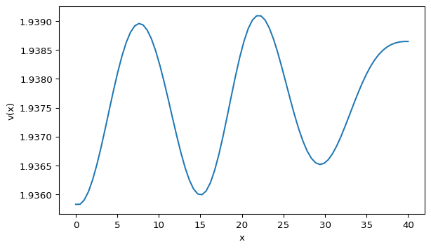

Gierer-Meinhardt Model (1D)
Reaction-Diffusion PDE
The Gierer-Meinhardt model is a classical reaction-diffusion system that can generate spatial patterns. In 1D it reads
\[ \begin{aligned} \frac{\partial u}{\partial t} &= \Delta u + \gamma \left(a - b u + \frac{u^2}{v}\right), \\ \frac{\partial v}{\partial t} &= d\,\Delta v + \gamma \left(u^2 - v\right), \end{aligned} \]
where \(u(x,t)\) and \(v(x,t)\) are concentrations, \(a,b,\gamma\) are reaction parameters, and \(d\) is the diffusion ratio for \(v\).
Laplacian in 1D
In one dimension, the Laplacian is the second derivative:
\[ \Delta u = \frac{d^2 u}{dx^2}. \]
Using a centered finite difference on a grid with spacing \(h\):
\[ \Delta u(x) \approx \frac{u(x+h) - 2u(x) + u(x-h)}{h^2} + \mathcal{O}(h^2). \]
This is easy to implement with np.roll() to access neighbors on a grid.
Boundary Conditions
Neumann (zero flux)
\[u_x(0)=0,\quad u(0)=u(h)\]
Dirichlet (fixed values)
\[u(0)=\alpha,\quad u(L)=\beta\]
Periodic
\[u(0)=u(L)\]
Exercise: Simulate the PDE
The reference script uses \(L=40\), \(dx=0.5\), \(dt=0.001\), \(a=0.40\), \(b=1.00\), \(d=20\), and \(\gamma=1\). We initialize \(u(x)\) and \(v(x)\) at 1, add 1% noise, integrate with Euler’s method, apply Neumann boundary conditions, and visualize \(v(x)\).
Step 1: Initialize
import numpy as np
length = 40
dx = 0.5
lenx = int(length / dx)
uv = np.ones((2, lenx))
uv += uv * np.random.randn(2, lenx) / 100Step 2: Define the PDE
def gierer_meinhardt_pde(t, uv, gamma=1, a=0.40, b=1.00, d=20, dx=1):
# Laplacian via finite differences (np.roll handles neighbors)
lap = -2 * uv
lap += np.roll(uv, shift=1, axis=1)
lap += np.roll(uv, shift=-1, axis=1)
lap /= dx**2
u, v = uv
lu, lv = lap
# TODO: implement the reaction terms f(u, v) and g(u, v)
# TODO: combine diffusion + reaction to build du_dt and dv_dt
return du_dt, dv_dt
Hint: Gierer-Meinhardt PDE (click to expand)
def gierer_meinhardt_pde(t, uv, gamma=1, a=0.40, b=1.00, d=20, dx=1):
lap = -2 * uv
lap += np.roll(uv, shift=1, axis=1)
lap += np.roll(uv, shift=-1, axis=1)
lap /= dx**2
u, v = uv
lu, lv = lap
f = a - b * u + (u**2) / v
g = u**2 - v
du_dt = lu + gamma * f
dv_dt = d * lv + gamma * g
return du_dt, dv_dtStep 3: Time stepping
num_iter = 50000
dt = 0.001
for _ in range(num_iter):
dudt, dvdt = gierer_meinhardt_pde(0, uv, dx=dx)
uv[0] = uv[0] + dudt * dt
uv[1] = uv[1] + dvdt * dt
# Neumann boundary conditions
uv[:, 0] = uv[:, 1]
uv[:, -1] = uv[:, -2]Step 4: Plot
import matplotlib.pyplot as plt
x = np.linspace(0, length, lenx)
fig, ax = plt.subplots()
ax.plot(x, uv[1])
plt.show()Explore
Re-run with \(d=30\) and compare the pattern. Try other \((a, d)\) pairs and share your observations.
Animation Extension
Instead of plotting only the final state, update the line at every frame:
import matplotlib.animation as animation
(plot_v,) = ax.plot(x, uv[1])
def animate(frame):
nonlocal uv
dudt, dvdt = gierer_meinhardt_pde(frame, uv, dx=dx)
uv[0] = uv[0] + dudt * dt
uv[1] = uv[1] + dvdt * dt
plot_v.set_data(x, uv[1])
return (plot_v,)
ani = animation.FuncAnimation(fig, animate, interval=1, blit=True)If the system stays flat for some parameters and forms waves for others, you are seeing the onset of Turing instability. Proceed to the next page to analyze it.
Tip
Full reference code is available in sessions/s03_pdes_1d.